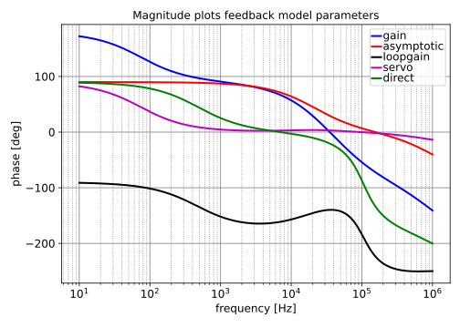

Go to A1_controller_single_pmos_optimization_index
SLiCAP: Symbolic Linear Circuit Analysis Program, Version 3.0.1 © 2009-2024 SLiCAP development team
For documentation, examples, support, updates and courses please visit: analog-electronics.tudelft.nl
Last project update: 2025-01-30 10:02:33